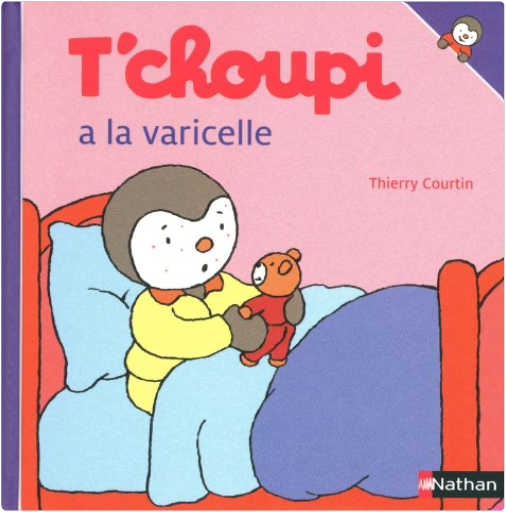
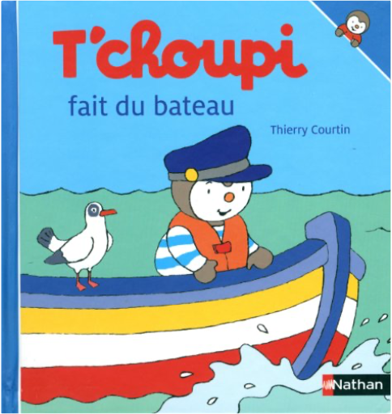
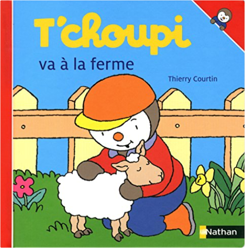
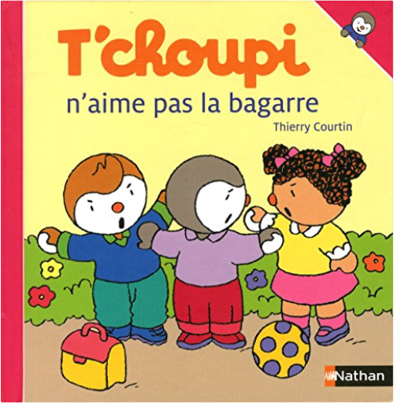

Books
Movies
Albums
Videogames
Games
BD
BD Camille
Blu-ray
Business
Camille
Comics
Cooking
Lego
Manga
Pauline
Photography
Star Wars
T'choupi
Travel
TV Shows
Un livre dont vous êtes le héro
Vinyl
Walt Disney
19
20
21
22
23

t'choupi, tome 47 : a la varicelle
thierry courtin
t'choupi, tome 48 : dort chez papi et mamie
thierry courtin
t'choupi, tome 49 : maman attend un bébé
thierry courtin
t'choupi, tome 50 : déménage
thierry courtin

t'choupi, tome 51 : fait du bateau
thierry courtin
t'choupi, tome 52 : mange à la cantine
thierry courtin
t'choupi, tome 53 : a un bobo
thierry courtin
t'choupi, tome 54 : est amoureux
thierry courtin

t'choupi, tome 55 : va à la ferme
thierry courtin

t'choupi, tome 56 : n'aime pas la bagarre
thierry courtin
Thierry Courtin - T'choupi
t'choupi, tome 57 : fait du ski
thierry courtin
t'choupi, tome 58 : n'a plus de tétine
thierry courtin
19
20
21
22
23


 Made with Delicious Library Made with Delicious Library
Made with Delicious Library Made with Delicious Library